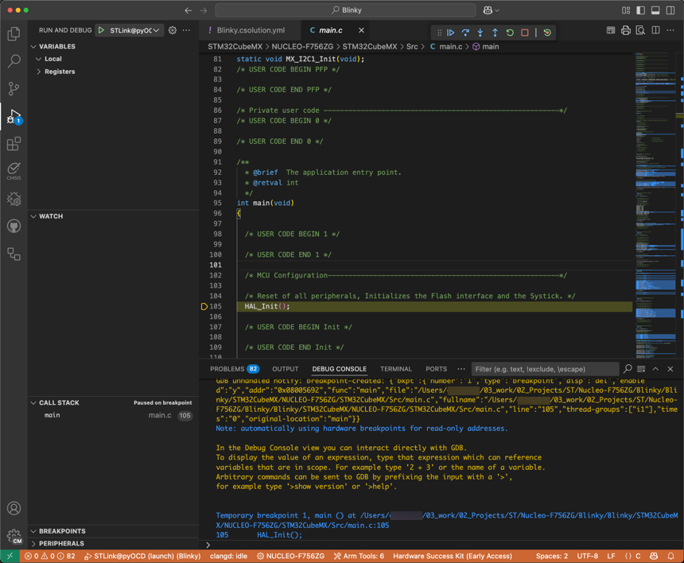

Debug the application
Debugging is an essential task for every embedded developer. You can debug your code on real hardware or on simulation models based on Fixed Virtual Platforms.
Debugging hardware
-
Check that your device is connected to your computer.
-
To start a debug session, click
 in the Activity Bar.
in the Activity Bar. -
Select a debug configuration in the list
 .
. -
Click .
Note
If you are using a multicore device and you did not specify a "processorName" in the launch.json file, select the
appropriate processor for your project in the Select a processor drop-down list at the top of the window.
The Run and Debug view displays and the debug session starts. The debugger stops at the main() function of the program:

The Debug Console tab displays the debugging output.
Debugging with simulation models
Fixed Virtual Platforms (FVPs) are complete simulations of an Arm system, including processor, memory and peripherals. These are set out in a "programmer's view", which gives you a comprehensive model on which to build and test your software.
Note
FVPs are natively available on Windows and Linux only. If you are on a Mac, follow this Learning Path to install Docker and clone the FVPs-on-Mac repository.
-
Go to the Device Manager
 and select the FVP that you want to
use. For example, MPS2 Cortex M4.
and select the FVP that you want to
use. For example, MPS2 Cortex M4. -
To start a debug session, click
and select the Arm Debugger FVP
debug configuration in the list.
-
Click Start Debugging.
Troubleshooting
If the Arm Debugger engine cannot be found on your machine, a dialog box appears:

Select one of these options:
- To add Arm Debugger to your environment, click Install Arm Debugger. The
vcpkg-configuration.jsonfile is updated. - To indicate the path to the Arm Debugger engine in the settings, click Configure Path.